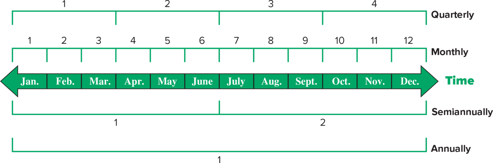

ACCT 203 · مبادئ المحاسبة المالية · Chapter 3: Adjusting Accounts for Financial Statements · القسم ١ من ٤:
Timing and Reporting
الهدف C1: Explain the importance of periodic reporting and the role of accrual accounting.
في الفصل الثاني سجّلت عمليات FastForward الخارجية في دفتر اليومية (journal) ورحّلتها وطلّعت ميزان المراجعة
(trial balance). بس آخر الشهر فيه حسابات أرصدتها مو جاهزة للقوائم المالية: تأمين خلص منه شهر، مستلزمات انصرف منها
جزء، رواتب استحقت وما اندفعت… أشياء صارت داخل الشركة وما أحد سجّلها. الفصل الثالث كله عن تسوية الحسابات
(adjusting accounts) قبل ما تطلع القوائم، وهذا القسم (C1) هو الأساس اللي يشرح ليش نسوي التسويات أصلاً.
خريطة الفصل (من Chapter Preview وLearning Objectives في أول الفصل). الكتاب يرمز للأهداف بثلاث حروف:
C = مفاهيمي (Conceptual)، A = تحليلي (Analytical)، P = إجرائي (Procedural).
| القسم | وش فيه | الأهداف |
|---|---|---|
| 1 (هذا) | الفترة المحاسبية · الاستحقاق مقابل النقدي · مبدأي الاعتراف · إطار التسويات والخطوات الثلاث | C1 |
| 2 | تسويات المؤجّلات: المصروفات المدفوعة مقدّماً (prepaid expenses) والإيرادات غير المكتسبة (unearned revenue) | P1 P2 |
| 3 | المصروفات المستحقة (accrued expenses) والإيرادات المستحقة (accrued revenues) وميزان المراجعة المعدّل (adjusted trial balance) | P3 P4 P5 |
| 4 | قيود الإقفال (closing entries) والدورة المحاسبية (accounting cycle) والميزانية المصنّفة (classified balance sheet) وهامش الربح (profit margin) ونسبة التداول (current ratio) | P6 C2 A1 |
| الملاحق | Appendix 3A (طرق بديلة للمدفوعات المقدّمة) · 3B (ورقة العمل — work sheet) · 3C (القيود العكسية — reversing entries) — ملاحق، اسأل الدكتور إذا داخلة | P7 P8 P9 |
ركّز من الحين على أربع أشياء تنسأل كثير من هالقسم: الفرق بين أساس الاستحقاق (accrual basis) والأساس النقدي (cash basis) · أرقام مثال التأمين (100 · 1,200 · 1,100 مقابل 2,400 · 0 · 0) · إن سنة النشاط الطبيعية (natural business year) تخلص لما المبيعات تكون في أقل مستوى · وإن قيد التسوية (adjusting entry) ما يلمس الـCash أبداً. والتعاريف خذها حرفية من صناديق EXAM BOX.
الكتاب يبدأ بجملة وحدة: قيمة المعلومة مربوطة بتوقيتها (timeliness). المعلومة المفيدة لازم توصل لأصحاب القرار (decision makers) بشكل متكرر، فالنظام المحاسبي يطلّع تقارير على فترات منتظمة (regular intervals).
Time period assumption (فرض الفترة الزمنية) = نفترض إن أنشطة المنظمة تنقسم لفترات زمنية محددة. والكتاب يعطيك أربع أمثلة:

هذا Exhibit 3.1 في الكتاب. في النص سهم أخضر اسمه Time عليه الشهور من Jan. لين Dec.، وحوله أربع أقواس تقسّم نفس السنة: Quarterly فوق (4 أجزاء)، Monthly تحته (12 جزء)، Semiannually تحت السهم (جزئين، كل جزء 6 شهور)، وAnnually آخر شي (جزء واحد). كيف تقرأه: كلها نفس السنة بس مقطّعة بأحجام مختلفة — هذي هي الفترات المحاسبية أو فترات التقرير (accounting, or reporting, periods). وش يجي منه بالاختبار: كم فترة في السنة لكل نوع (ربعي = 4، شهري = 12، نص سنوي = 2، سنوي = 1).
أغلب المنظمات تستخدم السنة كفترة محاسبية رئيسية (primary accounting period). ومن هنا عندك نوعين تقارير:
| التقرير | يغطي | بالعربي |
|---|---|---|
| Annual financial statements | سنة وحدة | القوائم المالية السنوية |
| Interim financial statements | شهر، أو 3 شهور، أو 6 شهور من النشاط | القوائم المالية المرحلية — منظمات كثير تطلّعها زيادة على السنوية |
فترة التقرير السنوية مو دايماً سنة ميلادية (calendar year) تخلص 31 ديسمبر. المنظمة تقدر تستخدم fiscal year (سنة مالية) = أي 12 شهر متتالية أو 52 أسبوع. مثال الكتاب: السنة المالية لـGap تخلص دايماً في آخر أسبوع من يناير أو أول أسبوع من فبراير كل سنة.
طيب كيف الشركة تختار متى تخلص سنتها؟ الكتاب يربطها بـموسمية المبيعات (seasonal variation in sales):
| الشركة | وش تختار | مثال الكتاب |
|---|---|---|
| مبيعاتها ما تتغير كثير مع المواسم (little seasonal variation) | غالباً السنة الميلادية (calendar year) كسنة مالية — تخلص 31 ديسمبر | Netflix |
| مبيعاتها موسمية (seasonal variations) | غالباً natural business year (سنة النشاط الطبيعية) — تخلص لما المبيعات تكون في أقل مستوى في السنة | Target وNordstrom (محلات تجزئة): تقريباً 31 يناير، بعد موسم الأعياد (after the holidays) |
ليش «أقل» مستوى؟ فكّر فيها: بعد موسم الأعياد المحل هادي، المخزون قليل، والموظفين فاضين يقفلون الدفاتر ويجردون — أسهل وقت تسكّر فيه السنة.
The value of information is linked to its timeliness. Useful information must reach decision makers frequently. To provide timely information, accounting systems prepare reports at regular intervals. The time period assumption presumes that an organization's activities can be divided into specific time periods such as a month, a three-month quarter, a six-month interval, or a year. Most organizations use a year as their primary accounting period. Reports covering a one-year period are known as annual financial statements. Many organizations also prepare interim financial statements covering one, three, or six months of activity.
The annual reporting period is not always a calendar year ending on December 31. An organization can use a fiscal year consisting of any 12 consecutive months or 52 weeks.
Companies with little seasonal variation in sales often use the calendar year as their fiscal year. Companies that have seasonal variations in sales often use a natural business year end, which is when sales are at their lowest level for the year. The natural business year for retailers such as Target and Nordstrom ends around January 31, after the holidays.
Emily Núñez Cavness شاركت في تأسيس Sword & Plough وهي منتشرة مع الجيش في أفغانستان — حتى إن اجتماع سكايب عندها انقطع بقصف هاون. هي وأختها Betsy يعيدون تدوير مواد الجيش الفائضة (military surplus materials) ويسوّون منها شنط قماش وحقائب يد وشنط ظهر وإكسسوارات، ولين الحين أعادوا تدوير 30,000 رطل من المواد.
والشاهد المحاسبي: الأختين يقولون إن جزء من نجاحهم سببه النظام المحاسبي — انتقالهم من نظام نقدي لنظام استحقاق عطاهم معلومات في وقتها أكثر (more timely information). والتسويات المحاسبية (accounting adjustments) رفعت قيمة بيانات الإيرادات والمصروفات، واستخدموها عشان يسعّرون أحسن ويديرون التكاليف. يعني فكرة هالقسم كلها في قصة وحدة: استحقاق + تسويات = معلومة أدق وأسرع.
بعد ما تسجّل العمليات والأحداث الخارجية (external transactions and events)، فيه حسابات كثير تحتاج تسويات (adjustments) قبل ما أرصدتها تطلع في القوائم المالية. ليش؟ لأن العمليات والأحداث الداخلية (internal transactions and events) لسّا ما انسجلت. تذكّر من الفصل الأول: العملية الداخلية = تبادل داخل الكيان نفسه، زي استهلاك المستلزمات.
والسؤال الكبير: متى نسجّل الإيراد والمصروف؟ فيه نظامين:
| Accrual basis accounting أساس الاستحقاق | Cash basis accounting الأساس النقدي | |
|---|---|---|
| الإيراد يتسجّل | لما الخدمات والمنتجات تتسلّم للعميل (delivered) | لما يدخل الكاش (cash is received) |
| المصروف يتسجّل | لما يصير (incurred) — ويتقابل مع الإيراد (matched with revenues) | لما يطلع الكاش (cash is paid) |
| الدخل | الإيرادات ناقص المصروفات (زي ما عرفت في الفصل الأول) | Cash receipts − cash payments = المقبوضات النقدية ناقص المدفوعات النقدية |
| رأي الكتاب | أغلب الناس متفقين إنه يعكس أداء الشركة أحسن، ويزيد قابلية المقارنة (comparability) للقوائم المالية من فترة لفترة | أضعف في عكس الأداء (مثال التأمين الجاي يوضّح ليش) |
شركة Roma في أول سنة: كسبت إيرادات $45,000 (انقبض منها كاش $37,000)، وصار عليها مصروفات $25,500 (دفعت منها كاش $20,250)، ودفعت مقدّم $6,750 كاش لتكاليف ما تصير مصروف إلا السنة الجاية. كم صافي الدخل على الأساسين؟
| الأساس | الحساب | صافي الدخل |
|---|---|---|
| Cash basis | 37,000 − (20,250 + 6,750) = 37,000 − 27,000 كل كاش طلع ينحسب، حتى المدفوع مقدّم | $10,000 |
| Accrual basis | 45,000 − 25,500 الإيراد المكتسب ناقص المصروف اللي صار؛ الـ6,750 أصل، مو مصروف هالسنة | $19,500 |
الفرق 19,500 − 10,000 = 9,500 كله توقيت: 8,000 إيراد انكسب وما انقبض (45,000 − 37,000) + 6,750 دفعة مقدّمة − 5,250 مصروف صار وما اندفع (25,500 − 20,250) = 9,500.
After external transactions and events are recorded, several accounts require adjustments before their balances appear in financial statements. This is needed because internal transactions and events are not yet recorded.
Accrual basis accounting records revenues when services and products are delivered and records expenses when incurred (matched with revenues). Cash basis accounting records revenues when cash is received and records expenses when cash is paid. Cash basis income is cash receipts minus cash payments.
Most agree that accrual accounting better reflects business performance than cash basis accounting. Accrual accounting also increases the comparability of financial statements from period to period.
هذي العملية رقم (13) من الفصل الثاني: FastForward دفعت $2,400 كاش (قسط التأمين — insurance premium) لبوليصة تأمين مدتها 24 شهر، والتغطية تبدأ 1 ديسمبر. القيد كان:
| Date | Account titles and explanation | Debit | Credit |
|---|---|---|---|
| (13) | Prepaid Insurance | 2,400 | |
| Cash | 2,400 |
يعني: Prepaid Insurance (تأمين مدفوع مقدّماً — أصل) زاد ← مدين، لأن الأصول تزيد بالمدين. وCash (أصل) نقص ← دائن. المعادلة: Assets (−2,400 + 2,400) = Liabilities 0 + Equity 0 — العملية غيّرت شكل الأصول بس، من كاش لتأمين مدفوع مقدّماً، والمصروف ينسجل بعدين مع انتهاء التغطية. وهذا قيد دفع عادي، مو قيد تسوية.
الاستحقاق يطلب إن $100 مصروف تأمين ينعرض كل شهر، من ديسمبر 2021 لين نوفمبر 2023. من وين جت الـ100؟ 2,400 ÷ 24 = 100 (والكتاب في الجزء الجاي يكتبها 1/24 of $2,400).
| السنة | الشهور المغطّاة | الحساب | مصروف التأمين |
|---|---|---|---|
| 2021 | ديسمبر بس (1) | 1 × 100 | $100 |
| 2022 | يناير – ديسمبر (12) | 12 × 100 | $1,200 |
| 2023 | يناير – نوفمبر (11) | 11 × 100 | $1,100 |
| المجموع | 24 شهر | $2,400 |
هذا Exhibit 3.2. على اليسار تابلت مكتوب فيه العملية: Paid $2,400 for 24 months' insurance beginning Dec. 1, 2021، وسهم يوديك لـثلاث رزنامات مكتوب فوق كل وحدة Insurance Expense والسنة: 2021 (زرقاء) كل الشهور $0 إلا ديسمبر $100 · 2022 (حمراء) كل الـ12 شهر $100 · 2023 (بنفسجية) من يناير لين نوفمبر $100 وديسمبر $0. كيف تقرأه: الأرقام المظلّلة بالأصفر هي الشهور اللي فيها مصروف — عدّها: 1 + 12 + 11 = 24 شهر. وش يجي منه بالاختبار: مصروف سنة معيّنة (خصوصاً 2021 = 100 و2023 = 1,100).
وأي قسط لسّا ما انتهى (unexpired premium) ينعرض أصل اسمه Prepaid Insurance في ميزانية الاستحقاق (accrual basis balance sheet). مثلاً آخر ديسمبر 2021 انتهى شهر واحد بس، فالباقي $2,300 يغطي الـ23 شهر الباقية — وهذا بالضبط الرقم اللي يطلع بقيد التسوية في القسم ٢.
وكمّل نفس الحسبة لآخر كل سنة (حسبة على أرقام الكتاب — نفس فكرة Exercise 3-1): الرصيد = 2,400 ناقص كل المصروف اللي انعرض لين ذاك التاريخ.
| رصيد Prepaid Insurance في الميزانية | Accrual basis | Cash basis |
|---|---|---|
| 31 ديسمبر 2021 | 2,400 − 100 = $2,300 | $0 |
| 31 ديسمبر 2022 | 2,300 − 1,200 = $1,100 | $0 |
| 31 ديسمبر 2023 | 1,100 − 1,100 = $0 | $0 |
قائمة الدخل (income statement) على الأساس النقدي لـديسمبر 2021 تعرض مصروف تأمين $2,400 كامل. وقوائم الدخل النقدية لـ2022 و2023 ما فيها أي مصروف تأمين. والميزانية النقدية ما تعرض أبداً أصل تأمين مدفوع مقدّماً — لأنه انصرف كله على طول (immediately expensed).
هذا Exhibit 3.3 — نفس التابلت ونفس الرزنامات الثلاث، بس الأرقام تغيّرت: 2021 كل الشهور $0 إلا ديسمبر $2,400 (المظلّل الوحيد في الشكل كله) · 2022 و2023 كل الشهور $0. كيف تقرأه: حطّه جنب Exhibit 3.2 — نفس العملية، بس النقدي يرمي المبلغ كله في الشهر اللي طلع فيه الكاش. وش يجي منه بالاختبار: مصروف 2022 أو 2023 على الأساس النقدي = صفر.
والمشكلة: الدخل النقدي لـ2021–2023 ما يقابل (does not match) تكلفة التأمين مع منافع التأمين اللي الشركة استفادتها في هالسنين. الشركة محميّة 24 شهر، بس النقدي يحمّل التكلفة كلها على شهر واحد.
| السنة | Accrual basis (Exhibit 3.2) | Cash basis (Exhibit 3.3) |
|---|---|---|
| 2021 | $100 | $2,400 |
| 2022 | $1,200 | $0 |
| 2023 | $1,100 | $0 |
| المجموع | $2,400 | $2,400 |
لاحظ: المجموع واحد ($2,400) في النظامين — الفرق كله في التوقيت: أي سنة تشيل المصروف.
FastForward paid $2,400 for 24 months of insurance coverage that began on December 1, 2021. Accrual accounting requires that $100 of insurance expense be reported each month, from December 2021 through November 2023. (This means expenses are $100 in 2021, $1,200 in 2022, and $1,100 in 2023.) Any unexpired premium is reported as a Prepaid Insurance asset on the accrual basis balance sheet.
A cash basis income statement for December 2021 reports insurance expense of $2,400, as shown in Exhibit 3.3. The cash basis income statements for years 2022 and 2023 report no insurance expense. The cash basis balance sheet never reports a prepaid insurance asset because it is immediately expensed. Also, cash basis income for 2021–2023 does not match the cost of insurance with the insurance benefits received for those years.
| المبدأ | التعريف بالإنجليزي (احفظه حرفي) | بالعربي |
|---|---|---|
| Revenue recognition principle مبدأ الاعتراف بالإيراد |
Requires that revenue be recorded when goods or services are provided to customers and at an amount expected to be received from customers. | الإيراد ينسجل لما السلع أو الخدمات تتقدّم للعملاء، وبالمبلغ المتوقع تستلمه منهم — يعني شرطين: متى وكم. |
| Expense recognition (or matching) principle مبدأ الاعتراف بالمصروف (المقابلة) |
Requires that expenses be recorded in the same accounting period as the revenues that are recognized as a result of those expenses. | المصروف ينسجل في نفس الفترة المحاسبية للإيراد اللي انعترف فيه بسبب هالمصروف. |
ودور التسويات هنا: تضمن إن الإيراد ينعرض في الفترة اللي انقدّمت فيها الخدمات والمنتجات. ونفس الشي للمصروف: تأمين FastForward يحمي الشركة وهي تشتغل وتجيب إيراد كل شهر، فمصروفه ($100) ينحط في كل شهر — وهذا هو الـmatching اللي الأساس النقدي ما يسويه.
الكتاب يعطي مواقف منفصلة ويسأل: كم إيراد أو مصروف ينعترف فيه في ديسمبر على أساس الاستحقاق؟ الحل تحت مبني على المبدأين فوق.
| الموقف | ديسمبر | ليش |
|---|---|---|
| إيرادات (Exercise 3-2) | ||
| Oklahoma City Thunder باعت تذكرة مباراة بـ$90 في 7 ديسمبر، والمباراة في مارس | $0 | الخدمة (المباراة) ما انقدّمت لسّا — الكاش اللي انقبض = unearned revenue (القسم 2) |
| Tesla باعت وسلّمت سيارة بـ$58,000 في 25 ديسمبر، والعميل ما بيدفع إلا في فبراير | $58,000 | المنتج تسلّم في ديسمبر؛ متى يدفع ما يغيّر شي |
| Deloitte وقّعت عقد في 1 ديسمبر لـ40 يوم استشارات، و$10,000 تنقبض آخر العقد؛ في 31 ديسمبر خلّصت 75% من الخدمة | $7,500 | 75% × 10,000 — الجزء اللي انقدّم من الخدمة |
| مصروفات (Exercise 3-3) | ||
| Chipotle عندها رواتب شهرية $3,200 صارت (incurred) وما اندفعت لين 31 ديسمبر | $3,200 | المصروف صار في ديسمبر؛ الدفع بعدين ما يغيّر شي |
| United Airlines اشترت بوليصة تأمين 24 شهر بـ$48,000 في 1 ديسمبر والتغطية فورية | $2,000 | 48,000 ÷ 24 = 2,000 لشهر واحد — نفس منطق FastForward |
| Pfizer دفعت مقدّم $20,000 في 15 ديسمبر لغرف فندق لاجتماع مبيعات في يناير | $0 | الفايدة في يناير ← المصروف في يناير؛ في ديسمبر هو أصل مدفوع مقدّماً |
We divide a company's activities into time periods, but not all activities are complete when financial statements are prepared. Thus, adjustments are required to get proper account balances.
We use two principles in the adjusting process: revenue recognition and expense recognition.
Revenue recognition principle requires that revenue be recorded when goods or services are provided to customers and at an amount expected to be received from customers. Adjustments ensure revenue is recognized (reported) in the time period when those services and products are provided.
Expense recognition (or matching) principle requires that expenses be recorded in the same accounting period as the revenues that are recognized as a result of those expenses.
الكتاب يحط أربع خانات (شكلها سداسي) جنب بعض من اليسار لليمين: Deferral of expense · Deferral of revenue · Accrued expense · Accrued revenue. كيف تقرأه: أول ثنتين تأجيل (deferral) وآخر ثنتين استحقاق (accrual) — وكل زوج فيه مصروف وإيراد. وش يجي منه بالاختبار: أي نوع ينطبق على موقف، أو أي وحدة مو من الأربع.
معاينة سريعة — كل نوع له شرح كامل في القسم اللي جنبه، وشكل القيد مأخوذ من ملخّص الكتاب للتسويات الأربع (Exhibit 3.12 — Summary of Adjustments، تشوفه كامل في القسم ٣):
| النوع | باختصار | شكل قيد التسوية | تفاصيله |
|---|---|---|---|
| Deferral of expense تأجيل المصروف |
دفعت قبل ما تستفيد؛ الدفعة أصل (prepaid expenses) وتتحول مصروف لما تستخدمها — زي تأمين FastForward | Dr. Expense (increase) Cr. Asset* (decrease) |
القسم 2 (P1) |
| Deferral of revenue تأجيل الإيراد |
قبضت كاش قبل ما تقدّم الخدمة؛ التزام (unearned revenue) يتحول إيراد لما تقدّمها — زي تذكرة Thunder | Dr. Liability (decrease) Cr. Revenue (increase) |
القسم 2 (P2) |
| Accrued expense مصروف مستحق |
مصروف صار وما اندفع ولا انسجل — زي رواتب Chipotle | Dr. Expense (increase) Cr. Liability (increase) |
القسم 3 (P3) |
| Accrued revenue إيراد مستحق |
إيراد انكسب وما انسجل ولا انقبض — زي الـ75% من عقد Deloitte | Dr. Asset (increase) Cr. Revenue (increase) |
القسم 3 (P4) |
* حاشية الكتاب: في الإهلاك (depreciation) الدائن يكون مجمّع الإهلاك (Accumulated Depreciation) — حساب مقابل (contra account) للأصل، يجيك في القسم ٢. وحاشية ثانية: الجدول يفترض إن المصروف المؤجّل انسجل أول مرة أصل والإيراد المؤجّل انسجل أول مرة التزام — الطريقة الثانية في Appendix 3A.
نفس Exhibit 3.12 يعطيك مفتاح الحفظ: في التأجيل (deferrals) الكاش ينقبض أو ينصرف قبل الاعتراف بالمصروف أو الإيراد؛ في الاستحقاق (accruals) الكاش يجي بعد الاعتراف. ولاحظ العمود الثالث: كل قيد فيه حساب قائمة دخل (Expense أو Revenue) + حساب ميزانية (Asset أو Liability)، وولا واحد فيه Cash.
| Step 1: | Determine what the current account balance equals. |
| Step 2: | Determine what the current account balance should equal. |
| Step 3: | Record an adjusting entry to get from step 1 to step 2. |
بالعربي: ١) وش رصيد الحساب الحين؟ ٢) وش رصيده المفروض يكون؟ ٣) سجّل قيد تسوية يوديك من الأولى للثانية. هذي الطريقة تستخدمها في كل تسوية في القسمين ٢ و٣.
قيد التسوية (adjusting entry) = قيد ينعمل آخر الفترة المحاسبية ويعكس عملية أو حدث لسّا ما انسجل. وقاعدته الذهبية: يمس حساب أو أكثر من قائمة الدخل (إيراد أو مصروف) وحساب أو أكثر من الميزانية (أصل أو التزام) — وأبداً ما يمس الـCash.
| Date | Account titles and explanation | Debit | Credit |
|---|---|---|---|
| Adjustment (a) | |||
| Dec. 31 | Insurance Expense | 100 | |
| Prepaid Insurance | 100 | ||
| Record first month's expired insurance. |
يعني: Insurance Expense (مصروف — قائمة الدخل) زاد ← مدين، لأن المصروفات تزيد بالمدين. وPrepaid Insurance (أصل — الميزانية) نقص ← دائن. المعادلة: Assets −100 = Liabilities + Equity −100. ولاحظ القاعدة: حساب دخل + حساب ميزانية، وما فيه Cash — الكاش طلع من زمان في العملية (13).
| Prepaid Insurance (128) | |
|---|---|
| Debit | Credit |
| Dec. 1 2,400 | Dec. 31 100 |
| Balance 2,300 | |
يعني: الحساب بدأ مدين بـ2,400، والتسوية حطت 100 في الدائن، فالرصيد صار 2,400 − 100 = 2,300 — بالضبط الرقم المفروض في الخطوة 2.
| Insurance Expense (637) | |
|---|---|
| Debit | Credit |
| Dec. 31 100 | |
| Balance 100 | |
يعني: المصروف بدأ صفر، والتسوية حطت فيه 100 مدين — وهذا الـ$100 اللي ينعرض في قائمة دخل ديسمبر 2021، نفس رقم رزنامة 2021 في Exhibit 3.2. الكتاب يقول بعد التسوية والترحيل، رصيد Insurance Expense ($100) ورصيد Prepaid Insurance ($2,300) جاهزين للقوائم المالية.
Four types of adjustments exist for transactions and events that extend over more than one period.
Adjustments are made using a 3-step process, as shown in Exhibit 3.4.
Step 1: Determine what the current account balance equals.
Step 2: Determine what the current account balance should equal.
Step 3: Record an adjusting entry to get from step 1 to step 2.
Each adjusting entry made at the end of an accounting period reflects a transaction or event that is not yet recorded. An adjusting entry affects one or more income statement accounts and one or more balance sheet accounts (but never the Cash account).
الأسئلة بالإنجليزي لأن الاختبار بالإنجليزي. جاوب قبل ما تفتح الحل. لو غلطت في ٢ ارجع لجدول السنين في المفهوم الثالث، ولو غلطت في ٣ ارجع لتمرين Roma في المفهوم الثاني.
B. الكتاب: الشركات اللي مبيعاتها موسمية تختار natural business year تخلص لما المبيعات تكون في أقل مستوى في السنة — وللتجزئة هذا تقريباً 31 يناير، بعد موسم الأعياد. الفخ في C: عكس الكتاب (أعلى بدل أقل). وA فخ: بداية موسم الأعياد هي بداية الزحمة، والكتاب يقول السنة تخلص بعد الأعياد (after the holidays). وD فخ: 31 ديسمبر هي السنة الميلادية اللي تستخدمها الشركات قليلة الموسمية زي Netflix.
B. في 2023 التغطية من يناير لين نوفمبر = 11 × 100 = 1,100 — رزنامة 2023 في Exhibit 3.2 ديسمبر فيها $0. والأساس النقدي حط الـ2,400 كلها في ديسمبر 2021، فـ2023 = صفر (Exhibit 3.3). الفخ في A: يحسب 12 شهر وينسى إن التغطية تخلص نوفمبر 2023. وC يحط الـ2,400 في السنة الغلط. وD يعكس الأساسين.
A. النقدي = المقبوضات ناقص كل المدفوعات: 52,000 − (30,000 + 4,000) = 18,000. الاستحقاق = الإيراد المكتسب ناقص المصروف اللي صار: 60,000 − 35,000 = 25,000. الفخ في B: نسي الـ4,000 المدفوعة مقدّم في النقدي (52,000 − 30,000 = 22,000). وC يعكس الأساسين. وD خصم الـ4,000 في الاستحقاق — بس هي أصل مدفوع مقدّماً، مو مصروف هالسنة. نفس فكرة Roma في المفهوم الثاني بالضبط.
B. Revenue recognition principle: الإيراد ينسجل لما الخدمة تتقدّم وبالمبلغ المتوقع استلامه — زي سيارة Tesla في Exercise 3-2. الفخ في A: هذا تفكير الأساس النقدي. وD فخ: unearned revenue لما الكاش ينقبض قبل الخدمة — هنا العكس، الخدمة قبل الكاش (والعميل صار عليه فلوس للشركة — فيتسجّل يومها، 20 ديسمبر: مدين Accounts Receivable (الذمم المدينة)، دائن الإيراد؛ ويصير accrued revenue بس لو ما انسجل لين آخر الفترة، القسم ٣). وC ما له أي أساس في المبدأ — الخدمة كلها انقدّمت في ديسمبر.
B. هذي جملة الكتاب حرفياً: حساب قائمة دخل + حساب ميزانية، وأبداً ما فيه Cash — زي قيد التأمين: Insurance Expense وPrepaid Insurance. الفخ في A: قيود التسوية تنعمل آخر الفترة وما لها دخل بحركة الكاش. وC فيه Cash وفيه حسابين ميزانية — غلطتين. وD فخ: نحتاجها لأن العمليات الداخلية لسّا ما انسجلت، مو لأن فيه أخطاء.
| English | بالعربي | الفخ |
|---|---|---|
| Timeliness | التوقيت المناسب للمعلومة | قيمة المعلومة مربوطة فيه ← تقارير على فترات منتظمة |
| Time period assumption | فرض الفترة الزمنية | فرض إن النشاط ينقسم لفترات: شهر · ربع (3 شهور) · نص سنة · سنة |
| Accounting (reporting) period | الفترة المحاسبية | أغلب المنظمات فترتها الرئيسية = سنة (Exhibit 3.1) |
| Annual financial statements | القوائم المالية السنوية | تغطي سنة وحدة |
| Interim financial statements | القوائم المالية المرحلية | 1 أو 3 أو 6 شهور — أقل من سنة |
| Fiscal year | السنة المالية | أي 12 شهر متتالية أو 52 أسبوع — مو شرط تخلص 31 ديسمبر (Gap) |
| Calendar year | السنة الميلادية | تخلص 31 ديسمبر؛ للشركات قليلة الموسمية (Netflix) |
| Natural business year | سنة النشاط الطبيعية | تخلص لما المبيعات في أقل مستوى — Target وNordstrom حوالي 31 يناير |
| Accrual basis accounting | أساس الاستحقاق | الإيراد لما يتسلّم المنتج أو الخدمة، والمصروف لما يصير (ويتقابل مع الإيراد) |
| Cash basis accounting | الأساس النقدي | الإيراد لما يدخل الكاش، والمصروف لما يطلع؛ الدخل = مقبوضات − مدفوعات |
| Comparability | قابلية المقارنة | الاستحقاق يزيدها من فترة لفترة — مو النقدي |
| Unexpired premium (Prepaid Insurance) | قسط التأمين اللي ما انتهى (تأمين مدفوع مقدّماً) | أصل في ميزانية الاستحقاق؛ الميزانية النقدية ما تعرضه أبداً |
| Revenue recognition principle | مبدأ الاعتراف بالإيراد | لما السلع أو الخدمات تتقدّم + بالمبلغ المتوقع استلامه |
| Expense recognition (matching) principle | مبدأ الاعتراف بالمصروف (المقابلة) | نفس فترة الإيراد اللي ساعد يجيبه — مو وقت الدفع |
| Four types of adjustments | أنواع التسويات الأربعة | deferral of expense · deferral of revenue · accrued expense · accrued revenue |
| Deferrals / Accruals | التأجيل / الاستحقاق | التأجيل: الكاش قبل الاعتراف · الاستحقاق: الكاش بعد الاعتراف (Exhibit 3.12) |
| Three-step process (Exhibit 3.4) | الخطوات الثلاث للتسوية | الرصيد الحين ← الرصيد المفروض ← قيد التسوية |
| Adjusting entry | قيد تسوية | آخر الفترة؛ حساب قائمة دخل + حساب ميزانية؛ أبداً ما يمس Cash |
| Exhibits 3.2 / 3.3 | الاستحقاق مقابل النقدي (مثال التأمين) | 100 · 1,200 · 1,100 مقابل 2,400 · 0 · 0 — المجموع واحد |
مبني من نص الكتاب Financial Accounting Fundamentals (John J. Wild، McGraw Hill، الطبعة ٨) —
Chapter 3: Adjusting Accounts for Financial Statements: فاتحة الفصل (Chapter Preview · Learning Objectives ·
Leading the Way) والجزء Timing and Reporting (فروعه: The Accounting Period · Accrual Basis versus Cash Basis ·
Recognizing Revenues and Expenses · Framework for Adjustments)، الهدف C1 (صفحات ٨٤–٨٧)، مع
Exhibits 3.1 لين 3.4.
ملخّص بس: قصة Sword & Plough في Leading the Way مأخوذ منها الشاهد المحاسبي بس. قيد العملية (13) من الفصل
الثاني، ومعاينة قيد التأمين $100 وحسابات T من جزء Deferral of Expense (شرحه الكامل في القسم ٢)، وعمود «شكل قيد التسوية»
من Exhibit 3.12 في جزء Accrued Revenue (القسم ٣). حلول QS 3-2 وExercises 3-2 و3-3 محسوبة هنا من
أرقام الكتاب — الكتاب يعطي الأسئلة بدون حل — وجدول رصيد التأمين آخر كل سنة حسبته من أرقام المثال (فكرة Exercise 3-1). تمرين
QS 3-1 (إكمال فراغات بالمصطلحات) ما انحل هنا — مصطلحاته كلها في جدول المصطلحات فوق. أرقام الأسئلة ٣ و٤ من عندي.
ملاحق الفصل: 3A و3B و3C (P7–P9) مذكورة في ملاحظات الأقسام ٢ و٣ و٤ — ملاحق، اسأل الدكتور إذا داخلة.